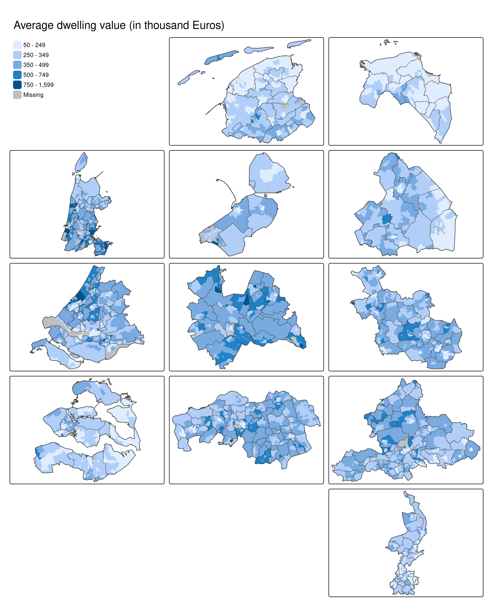

Get grid layout of Dutch provinces
nl_prov_grid1 = geofacet::nl_prov_grid1
class(nl_prov_grid1) = "data.frame"
nl_prov_grid1 = nl_prov_grid1 |>
mutate(name = ifelse(name == "Friesland", "Fryslan", name)) |>
select(-code)Join with NLD datasets in tmap
NLD_prov2 = NLD_prov |>
left_join(nl_prov_grid1,
by = "name")
NLD_muni2 = NLD_muni |>
left_join(NLD_prov2 |>
st_drop_geometry() |>
select(name, row, col), by = c("province" = "name"))
NLD_dist2 = NLD_dist |>
left_join(NLD_prov2 |>
st_drop_geometry() |>
select(name, row, col), by = c("province" = "name"))The map
tm_shape(NLD_dist2) +
tm_fill("dwelling_value",
fill.scale = tm_scale_intervals(breaks = c(50, 250, 350, 500, 750, 1600), as.count = FALSE),
fill.legend = tm_legend("", position = tm_pos_on_top("left", "top"), frame = FALSE)) +
tm_facets_grid(rows = "row", columns = "col") +
tm_shape(NLD_muni2) +
tm_borders(lwd = 1) +
tm_facets_grid(rows = "row", columns = "col") +
tm_shape(NLD_prov2) +
tm_borders(lwd = 2) +
tm_facets_grid(rows = "row", columns = "col") +
tm_layout(panel.show = FALSE) +
tm_title("Average dwelling value (in thousand Euros)")